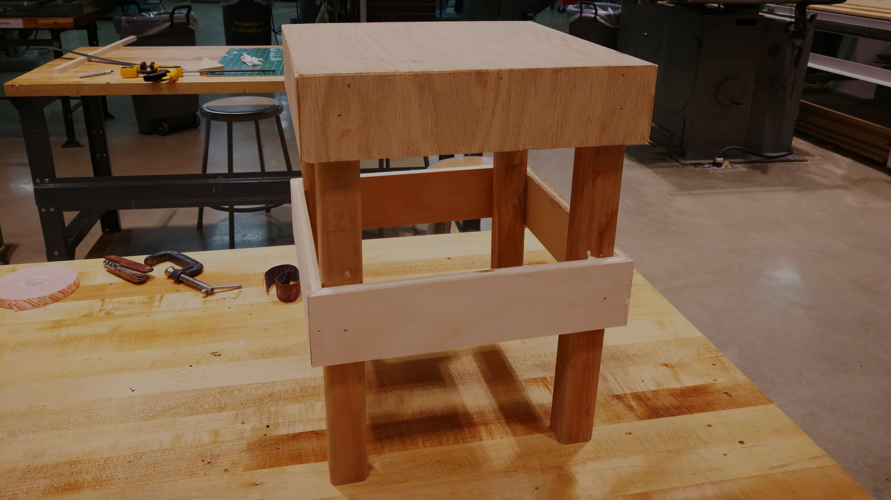
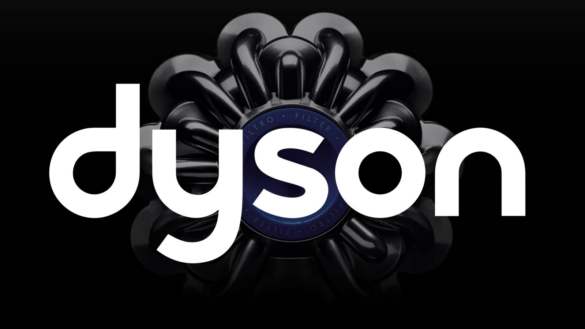
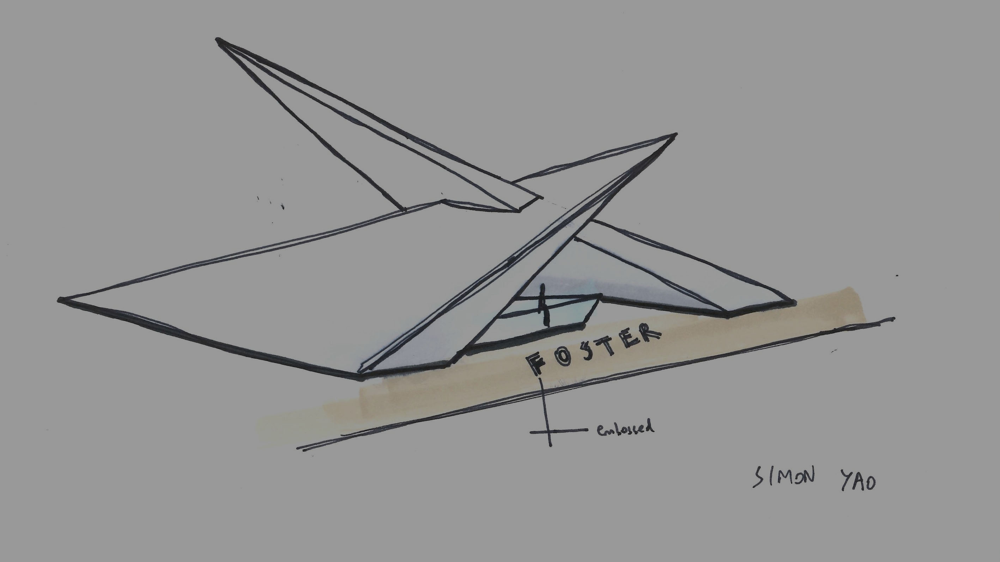
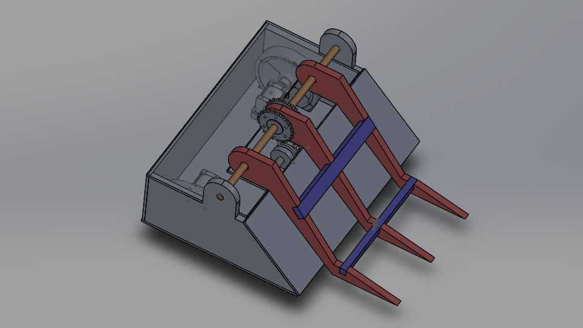
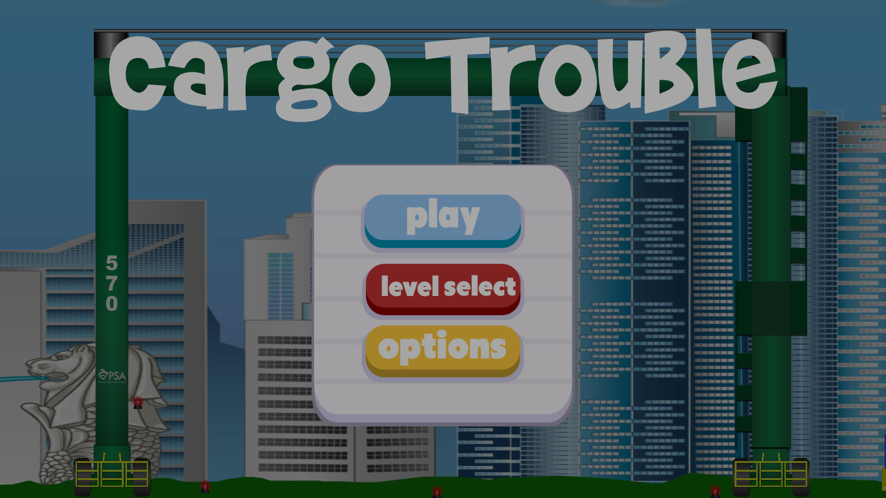
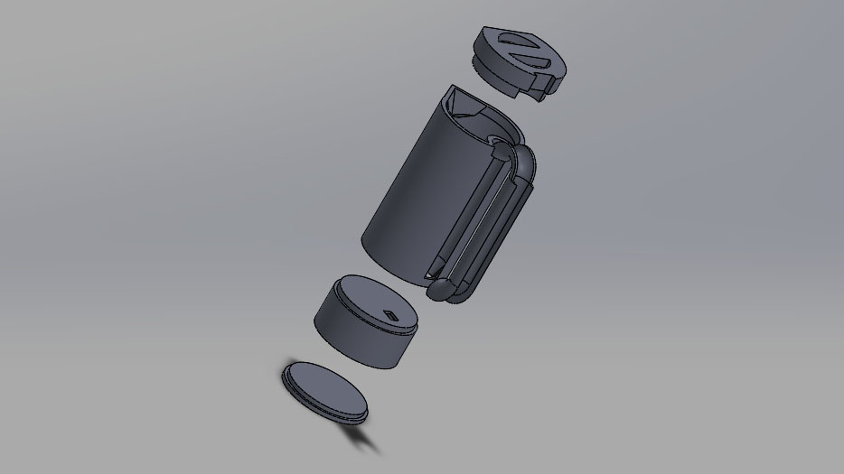

I enjoy challenging myself and trying out new things. These are some of the works that I have built, designed or programmed in the past.

Mechatronics

Nickel Feeder

Design Thinking and Doing

Dyson Internship

Industrial Design

Robobrawl

psa game-it challenge

Milkwatch
I believe in working hard and playing hard. These are some of the activities that I like to pursue in my free time.

About Me

Hi, I’m Xin Meng. I enjoy designing and making stuff.
I am currently enrolled in the Renaissance Engineering Program at Nanyang Technological University. I also am receiving a certificate in design from the Segal Design Institute at Northwestern University. As a mechanical engineer, I found my passion in mechatronics and I embrace the technical challenges involved.
In my free time, I play video games, Chinese flute, Chinese chess, badminton and table tennis.
View my resume